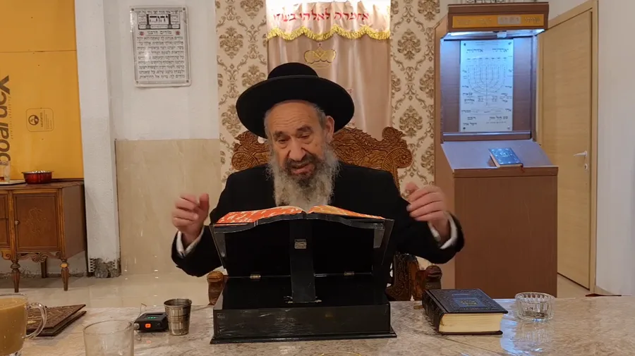
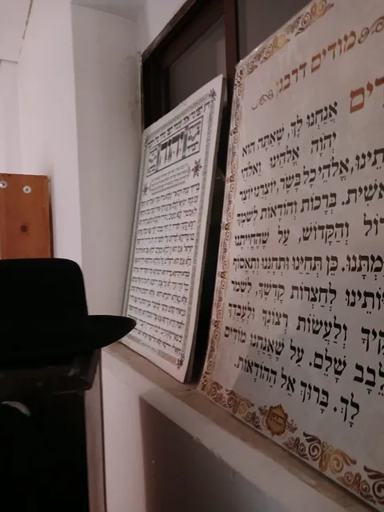
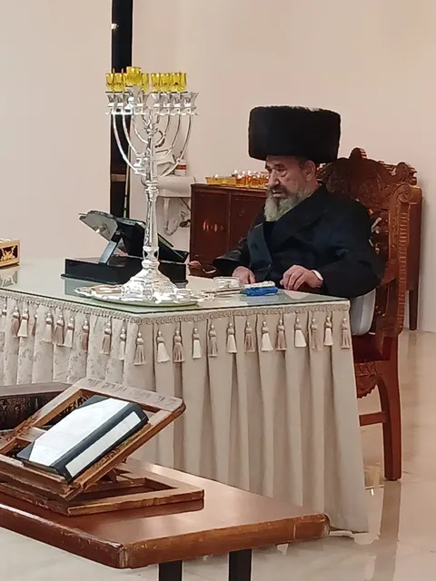
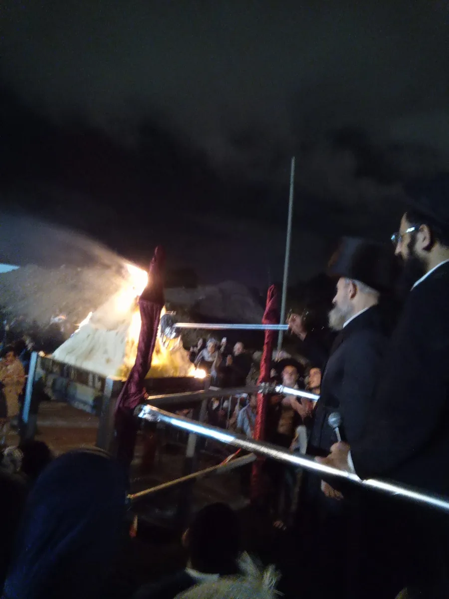
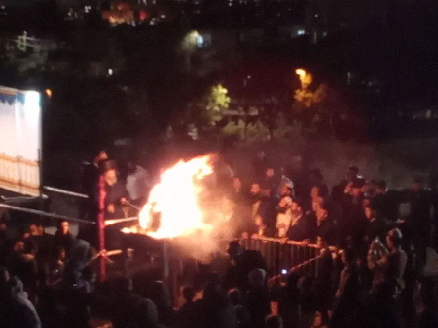

הזמנים הקבועים בבית המדרש. זמני מוצאי שבת משתנים לפי הזמן ההלכתי.
מפי הרב אשר עבאדי שליט״א


שיעורים, אירועים ומפגשים בישיבת פאר יוסף
עטרת מנשה הוא מרכז ללימוד יהדות ותורה, הממוקם בדרום ירושלים, ליד הטיילת הצופה אל הנוף עוצר הנשימה של הר הבית.
המקום המדהים הזה הוא מרכז של משפחות רבות, המקדיש את רוב שעות היום ללימוד תורה, תפילות ועבודת ה׳.
ראש הישיבה: הרב אשר עבאדי שליט"א
עטרת מנשה הוציאו מספר ספרים המעניקים מבט ברור ומעמיק בתורתו של רבי נחמן מברסלב.
יש גם שיעורים ומפגשים לנשים, ופעילויות לילדים כמו קבוצות תהילים, ״מתמידים״ — אבות ובנים לומדים יחד — ואירועים מיוחדים הקשורים לחגים.
במהלך השנים נאלצה הישיבה לעבור ממקום למקום בשל חוסר התאמה לצרכים של בית כנסת ובית מדרש לכל דורש. לאחר תפילות רבות, הצליחו בנס למצוא בניין מתאים. המבנה נמצא כעת בבנייה, ואנו מקווים כי בסופו של דבר יהפוך למרכז רוחני שישפיע לטובה על כל ישראל והעולם.
אותו מרכז יהדות אינו ממומן על ידי אף מפלגה ואין לו תמיכה כספית מכל סוג שהוא. כל הפעילות מושתתת על רצון טוב של יהודים חמי לב, המבינים את הערך של קיום מרכז כזה ומוכנים להיות שותפים ולעזור בכל דרך שהם יכולים — להמשכיות וחיזוקה של פעילות מבורכת זו.

ספר




ימי פטירת הצדיקים הקדושים — שבועיים הקרובים
| שם | תאריך עברי | תאריך לועזי |
|---|---|---|
| טוען... | ||
קדושי סלוניקי, ירושלים 9339012
תרומתכם מאפשרת לנו להמשיך ולהאיר. לימוד תורה, שיעורים, וקהילה חיה — כל תרומה, קטנה כגדולה, מחזקת את הבית שלנו.
לתרומה